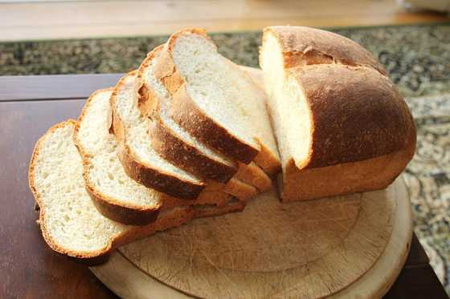
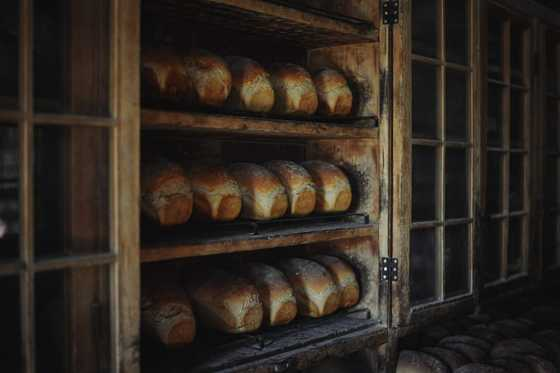

パン屋 / 福島県郡山市大槻町 / 土曜日のみ営業
nicottoにこっと
食べた人が、にこっとできますように。
国産小麦と白神こだま酵母で、ひとつずつ手づくりしているパン屋さんです。

お店の由来・想い
「にこっと」できるように、という願い。
nicotto(にこっと)は、郡山市の路地裏で、土曜日だけパンを焼いて販売してきたお店です。紹介記事によると、食べた人が「にこっと」できるようにという想いが込められています。材料は国産小麦・白神こだま酵母・ゲランドの塩・天然水。中に入れる具材まですべて手作りで、保存料などは使わないとのことです。
2024年11月に、郡山市大槻町反田へ移転したと紹介されています。毎週土曜日の営業で、内容は変わることがあるため、最新の情報はInstagramで案内されています。
情報源: ふくしまLOVE(2023年の紹介記事) / ふくラボ / Instagram
店名の詳しい由来は確認できていません。ほっとする丸みと、ほころぶ笑顔という全体の雰囲気は制作側のイメージです。
パンのこと
もっちり、ふんわり。焼き立ての食感を、おうちでも。
紹介記事では、もっちりとした食感が特徴で、トースターで温めると表面がサクッと、電子レンジで温めるとふわふわの焼き立てのような食感になると紹介されています。
菓子パン
チョコクリームやママレードの入ったパンなど。
総菜パン
ツナマヨやチーズの入ったパンなど。
贅沢キューブ
生クリームとはちみつを練り込んだ、人気のパンとして紹介されています。
ベーグル
長期低温発酵の生地のベーグルがあると紹介されています。
季節限定や新商品も登場するそうです。価格・各商品の詳細は準備中です。下の写真は雰囲気を伝えるフリー素材で、お店のパンではありません。







口コミ
こんな声が届きそうなお店です。
以下は制作側が考えたイメージ例で、実在のお客様の声ではありません。
袋を開けたらもっちりしていて、トースターで温めたらサクッと。朝ごはんが少し楽しみになりました。
土曜日に行くのが習慣に。小さなお店だけれど、気持ちが明るくなるパンです。
子どもが「もう一個!」と笑顔に。具材まで手作りと聞いて納得の味でした。
アクセス・ご案内
土曜日に、会いに行こう。
| 所在地 | 〒963-8877 福島県郡山市大槻町反田5-1 |
|---|---|
| 営業日 | 毎週土曜日(紹介情報による。臨時休業はInstagramで案内) |
| 営業時間 | 12:00〜16:00・無くなり次第終了(ふくラボ掲載。最新はInstagramで) |
| 電話 | 準備中 |
| 価格 | 準備中 |
| SNS | Instagram @nicotto_pan |